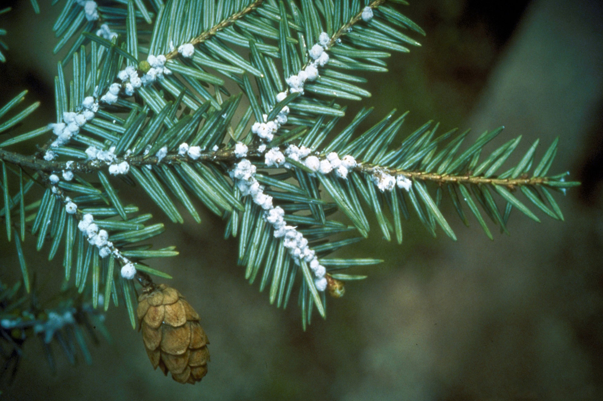
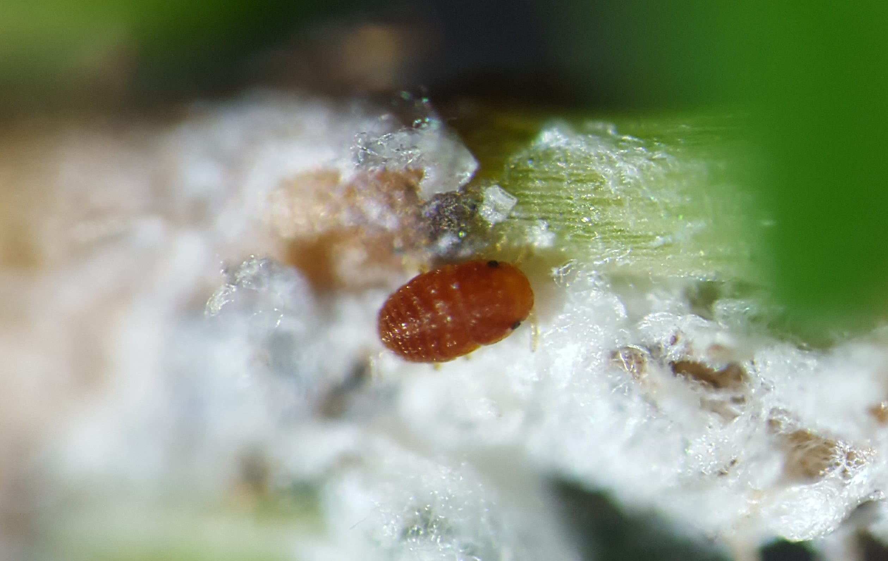
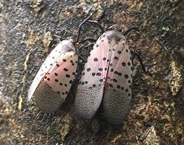
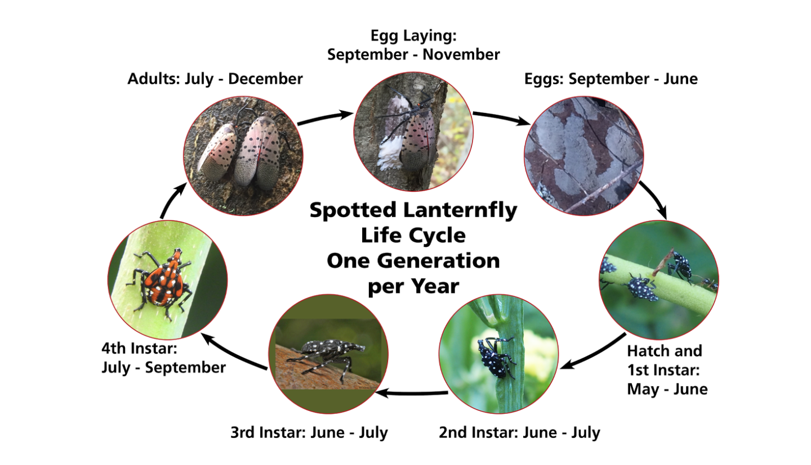
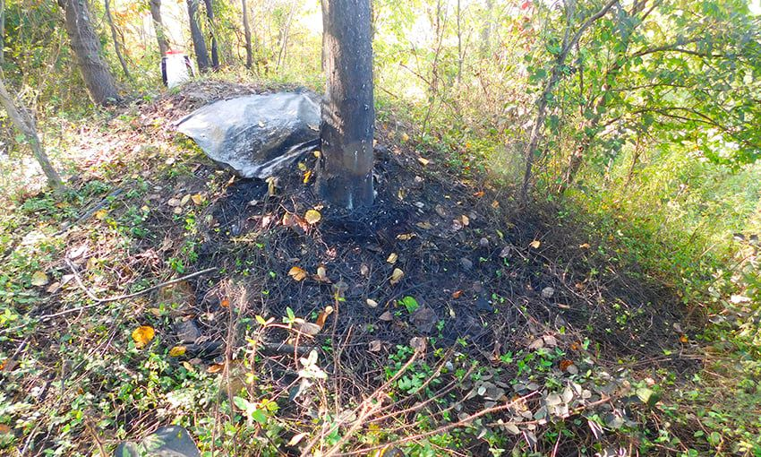
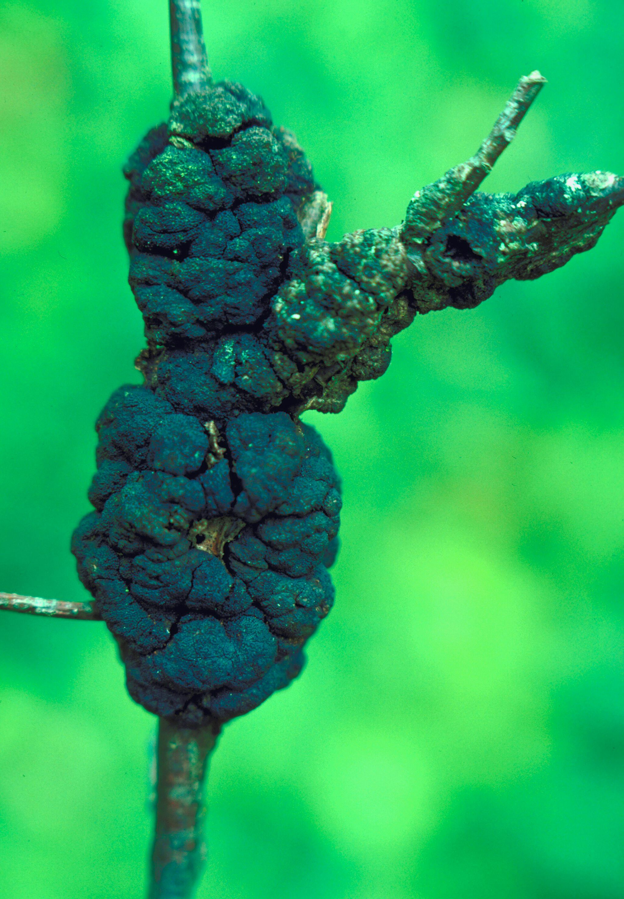
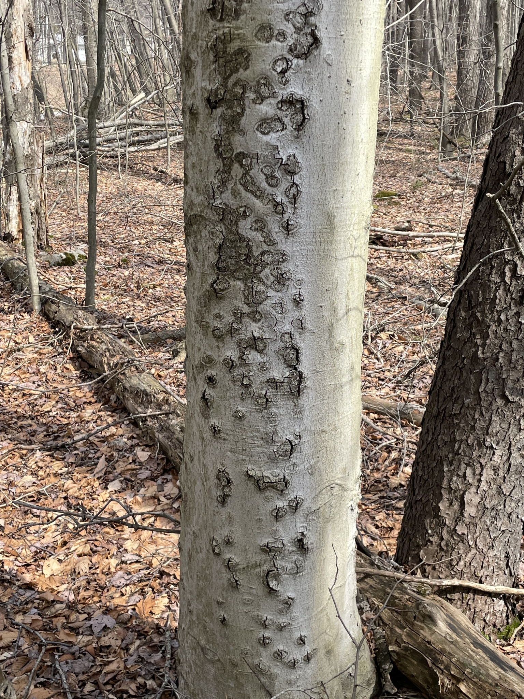
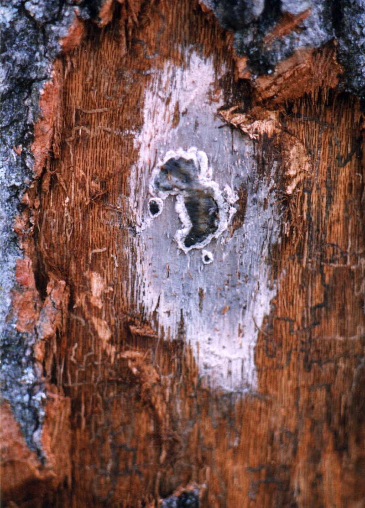

Hemlock Woolly Adelgid (Adelges tsugae)

Identification
Adult Hemlock Woolly Adelgids are tiny (less than 1 mm long) and appear as black or reddish-brown, oval-shaped insects. The most noticeable sign of their presence is the white, woolly masses they produce at the base of hemlock needles.

Hosts
HWA primarily infests Eastern Hemlock (Tsuga canadensis) and Carolina Hemlock (Tsuga caroliniana), both of which are highly susceptible to infestation.
Lifecycle
Hemlock woolly adelgids in northeastern North America are all female and reproduce asexually through parthenogenesis. Their life cycle consists of six stages: egg, four nymphal instars, and adult. There are two overlapping generations per year:
- The overwintering generation (sistens) is active from early summer through mid-spring, developing slowly and laying eggs in late winter to early spring.
- The spring generation (progrediens) hatches in early spring and matures by mid-summer, with some individuals producing a second round of eggs.
Eggs are laid in protective white woolly masses and hatch into crawlers that disperse to new growth. As they mature, they settle at the base of needles and begin feeding on stored nutrients, weakening the tree.

Damage Signs
Infested trees exhibit needle yellowing, premature needle drop, branch dieback, and a thinning canopy. Without intervention, trees can die within 4 to 10 years, especially in stressed environments.
Management
- Monitoring: Inspect the undersides of hemlock branches for white, woolly egg sacs.
- Cultural Controls: Maintain tree vigor through proper watering, fertilization, and pruning.
- Chemical Controls: Systemic insecticides, particularly imidacloprid (once per year as a soil drench) and dinotefuran (every 4 to 8 weeks during growing season), offer long-term control when applied to soil or injected into the tree.
- Biological Controls: Introduced predatory beetles (Laricobius nigrinus and Sasajiscymnus tsugae) have shown promise in reducing HWA populations. Timing is extremely important in this control since predatory beetles are only effective when HWA is actively feeding or breeding which makes them vulnerable.
Spotted Lanternfly (Lycorma delicatula)

Identification
Spotted Lanternfly adults are approximately 1 inch long and have distinctive gray forewings with black spots and bright red hindwings. Nymphs are black with white spots early in development, turning red before becoming adults.
Hosts
The primary host is the invasive Tree of Heaven (Ailanthus altissima), but Spotted Lanternflies also feed on grapevines, fruit trees (apple, peach), and hardwoods (oak, maple, walnut).
Lifecycle

Spotted Lanternflies have one generation per year. They lay eggs in late fall on trees, rocks, vehicles, and other smooth surfaces. Eggs hatch in late spring, and nymphs go through four stages:
- First to third instars: Black with white spots, highly mobile.
- Adults appear in midsummer, mate, and lay eggs from September through the first frost. The cycle repeats with the eggs overwintering.
Damage Signs

Signs of infestation include egg masses on tree trunks and outdoor surfaces, excessive sap oozing from feeding sites, honeydew accumulation attracting ants and wasps, and black sooty mold covering leaves and bark.
Management
- Monitoring: Survey trees and surfaces for egg masses, nymphs, and adults.
- Cultural Controls: Remove Tree of Heaven to limit preferred host availability.
- Chemical Controls: Contact insecticides (bifenthrin) and systemic insecticides (dinotefuran) have shown efficacy in controlling populations.
- Biological Controls: Research is ongoing into natural enemies like parasitic wasps (Anastatus orientalis) for population management.
- Physical Controls: Sticky bands around trees, and manually removing egg masses can augment other control methods. Studies have shown that the insects are attracted to vibration and there may be potential to develop traps based on this tendency.
Black Knot (Apiosporina morbosa)

Identification
Black Knot is a fungal disease that causes black, swollen galls to form along branches and twigs of infected trees. The galls start as small, light brown swellings and gradually darken and expand into rough, elongated knots.
Hosts
Black Knot primarily affects trees in the Prunus genus, including cherry (Prunus serotina), plum (Prunus domestica), apricot, and ornamental cherries.
Lifecycle
The Black Knot fungus overwinters in the galls, releasing spores in the spring during wet conditions. These spores infect young shoots, and symptoms become visible in the following growing season. The infection spreads rapidly in humid environments.
Damage Signs
Infected trees develop knobby, black fungal growths that girdle branches, leading to dieback and reduced fruit production. Severe infections can stunt tree growth and eventually cause tree death.
Management
- Pruning: Remove infected branches at least 6-8 inches below visible galls during winter while trees are dormant.
- Sanitation: Destroy pruned material by burning or burying to prevent fungal spread.
- Fungicides: Apply protective fungicides (e.g., chlorothalonil, lime sulfur) during early spring before bud break and repeat applications as necessary.
- Resistant Varieties: Consider planting disease-resistant varieties of Prunus species where available.
Beech Bark Disease (Cryptococcus fagisuga & Neonectria spp.)

Identification
Beech Bark Disease is a lethal disease caused by a combination of an invasive beech scale insect (Cryptococcus fagisuga) and fungal pathogens (Neonectria species). The scale insects pierce the bark, creating entry points for fungal infection, leading to cankers, bark splitting, and tree mortality.
Hosts
The primary host is American Beech (Fagus grandifolia), though European Beech (Fagus sylvatica) can also be affected.
Lifecycle
The disease progresses in two stages:
- Scale Insect Infestation: The invasive beech scale insect attaches to the bark and feeds on sap, covering the tree in a white, woolly wax coating.
- Fungal Infection: The fungi enter through wounds, causing cankers that disrupt nutrient flow, eventually leading to tree decline and death.
Damage Signs
Infested trees exhibit the following symptoms:
- White woolly scale insects on bark.
- Cankers, sunken areas, and bark splitting.
- Dieback in the crown of the tree.
- Tree mortality within a few years of severe infection.
Management
- Monitoring: Regularly inspect beech trees for scale infestations and early signs of fungal infection.
- Biological Control: Natural predators, such as parasitic wasps, may help suppress scale insect populations.
- Chemical Treatment: Insecticidal oils (e.g., horticultural oil) can help control scale insects, while systemic fungicides may help in early-stage infections.
- Resistant Trees: Some beech trees exhibit natural resistance; ongoing research supports selective breeding programs.
- Forest Management: Removing infected trees in heavily infested areas may help slow disease spread.
Oak Wilt (Bretziella fagacearum)

Identification
Oak Wilt is a serious vascular disease caused by the fungus Bretziella fagacearum. It rapidly kills red oaks and can also affect white oaks. The disease blocks water-conducting vessels, causing wilting and leaf drop.
Hosts
Red oaks (e.g., Quercus rubra) are highly susceptible and typically die within a few weeks to months. White oaks (e.g., Quercus alba) are more resistant and may survive longer or even recover from mild infections.
Lifecycle
- The fungus spreads underground through root grafts between adjacent oaks, especially in red oak groups.
- It also spreads above ground by sap-feeding beetles (e.g., nitidulids) that carry fungal spores from infected trees to fresh wounds on healthy trees.
- Fungal mats form under the bark of infected red oaks, producing spores that facilitate beetle transmission.

Damage Signs
- Leaves turn dull green or bronze and wilt starting at the top of the canopy.
- Premature leaf drop, often with partially green leaves falling.
- In red oaks, entire trees may die within weeks. White oaks decline more slowly, showing leaf browning over several seasons.
Management
- Root Graft Disruption: Trenching between infected and healthy trees can prevent underground spread.
- Sanitation: Promptly remove and destroy infected red oaks to prevent aboveground spread.
- Pruning Timing: Avoid pruning during growing season (especially April–July) to reduce beetle attraction.
- Chemical Treatment: Fungicide injections (e.g., propiconazole) can protect high-value white oaks, especially preventatively.
- Monitoring: Watch for rapid dieback in red oaks and notify forestry professionals promptly for diagnosis and management advice.